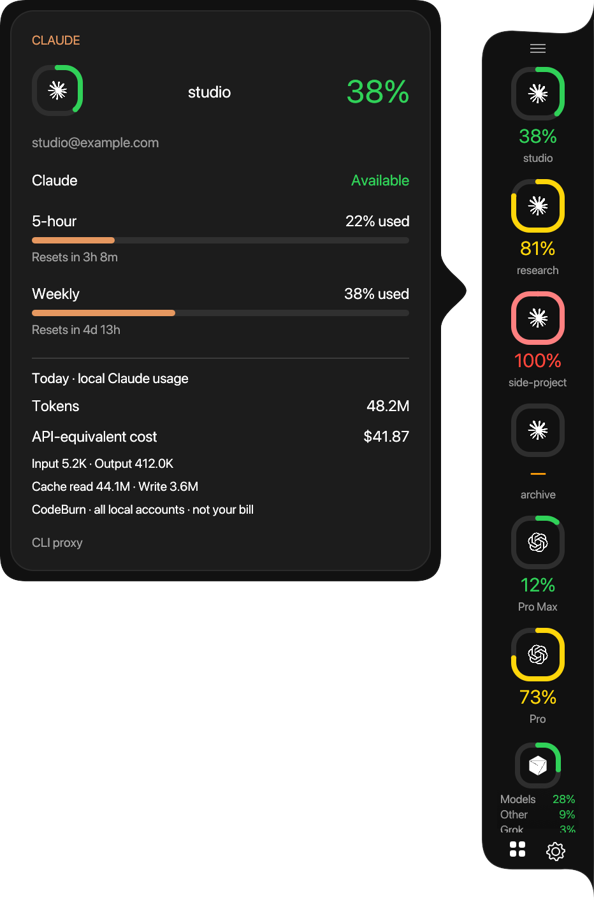

Every AI account's capacity, one glance away
A dock that shows how much of each quota you have used, when it resets, and what today's work cost. It reads your accounts locally and never routes your prompts.
- Claude
- Codex
- Cursor

All accounts, one view
Rings turn yellow at 70%, orange at 85% and red at the limit. Every card shows each quota window, its reset time and today's local token use.

Quota rings
Percent used on the tightest window: 5-hour, weekly or per model. Exhausted and disconnected accounts stay visible.
Cost on hover
Today's tokens and API-equivalent cost from CodeBurn, with input, output and cache counts.
Manage accounts
Hide an account from Mako, or delete its login from the proxy after a confirmation.
Local or remote proxy
Use CLIProxyAPI in Docker on this machine, or point Mako at a server with its address and key.
Your layout
Dock on any screen edge, scale it, round or square icons, labels on or off.
Private by design
Credentials stay with your proxy. The snapshot Mako keeps holds no tokens.
Download
Version 1.0.0. Each build needs Python 3.9 or newer. Add accounts with CLIProxyAPI; the install steps below set it up.
Windows and Linux are untested by hand. They build and pass the automated checks, but nobody has used them on a real machine yet. Hands-on testing is on the roadmap. Report a problem.
The macOS app is not notarised. After you move it to Applications, run this once, or right-click the app and choose Open:
xattr -dr com.apple.quarantine "/Applications/Mako Capacity.app"Install with the setup CLI
The CLI builds the app, installs CodeBurn and starts CLIProxyAPI in Docker. Prerequisites: Git, Python 3.9+, Node.js 22.13+ and Docker with Compose v2.
macOS and Linux
git clone https://github.com/Mako-L/account-capacity-dock.git
cd account-capacity-dock
./capacity installWindows PowerShell
git clone https://github.com/Mako-L/account-capacity-dock.git
cd account-capacity-dock
.\capacity.cmd installAdd your accounts
mako-capacity login claude # repeat per account
mako-capacity login codex
mako-capacity login cursorProxy on another machine
mako-capacity proxy https://server:8317 --key KEY
# or, for a new install without Docker:
./capacity install --proxy-url https://server:8317 --key KEYIn your terminal, with Herdr
The Herdr widget docks beside your panes. It shows rings only in a narrow pane and adds plans, notes and today's usage as it gets wider. Pin it, and it follows you to every tab.

herdr plugin install Mako-L/account-capacity-dock/herdr-plugin
herdr plugin action invoke pin-right --plugin mako-capacityThe rings need a terminal with the Kitty graphics protocol, such as Ghostty, Kitty or WezTerm, and kitty_graphics = true in Herdr's config. Over SSH, the terminal you type in draws them.